General Information
This branded website is publicly available at: https://emily2507.github.io/pawpath/
This website was created by:
- Emily Taslim (ID: 231533)
- Malina Wünsch (ID: 231087)
- Max Sumereder (ID: 247257)
- Carolina Pongratz (ID: 247260)
Content
Please clarify here the match between students and pieces of content. Make sure that you provide a link to the correct page within the website
| # | Name & Student ID |
Value | Name and link of content |
|---|---|---|---|
| 1. | Emily Taslim 231533 |
About us page | About us |
| 2. | Malina Wünsch 231087 |
Our vision | Our vision |
| 3. | Malina Wünsch 231087 |
Our values 1 | Our values |
| 4. | Emily Taslim 231533 |
Our values 2 | Our values |
| 5. | Carolina Pongratz 247260 |
Our values 3 | Our values |
| 6. | Max Sumereder 247257 |
Our values 4 | Our values |
| 7. | Max Sumereder 247257 |
Persona | Persona |
| 8. | Carolina Pongratz 247260 |
Visual identity | Visual identity |
| 9. | Emily Taslim 231533 |
Brand name & logo | Brand name |
Persona
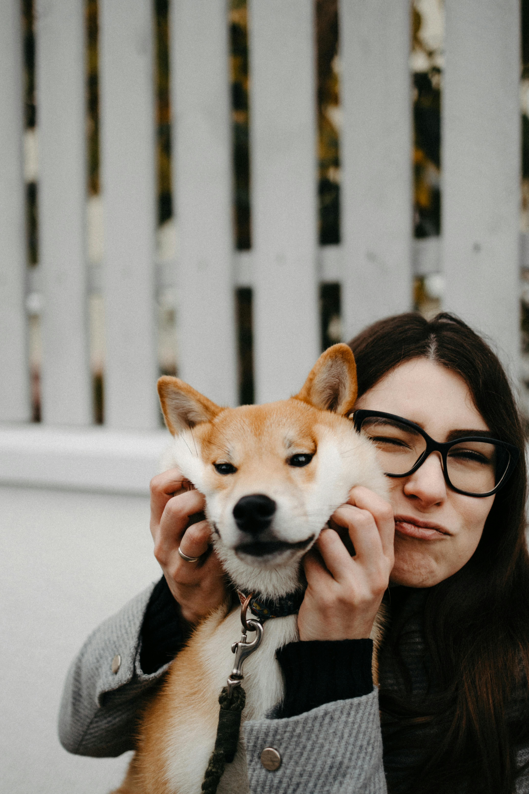
AVA GREENE AND SUNNY
Age:
23
Life phase:
Third-year bachelor’s student
Location:
Amsterdam, busy city
Personality:
charismatic, social, energetic, adventurous
Lifestyle:
An outdoorsy person who enjoys engaging with nature and is always interested in exploring new areas of the city. She can be found at most social gatherings and events (also in student societies), and is eager to meet new people. Her biggest dislikes are boredom and routine.
Interests:
Dogs, running, hiking, meeting new people, picnics Challenges: struggles forming long-lasting relationships with dog owners she meets on the street and coming up with exciting walking paths.
Challenges:
struggles forming long-lasting relationships with dog owners she meets on the street and coming up with exciting walking paths.
Day-in-the-life:
On a weekend, Ava is woken up at nine by Sunny’s gentle kisses. She feeds him and gets dressed before having a small, protein-packed breakfast and heading out to her go-to hiking trail. The two get there by car and Ava takes the same forty-minute walk that she does every Saturday. When the two return home, Ava spends time on community forums, scouring for suggestions of different walking routes in this busy city, which she feels that she has barely explored because she never knows where to start and is so often pre-occupied with preparing for her thesis. Sunny spends the afternoon by Ava’s side as she gets some work done before taking another walk to a nearby park. Unfortunately, they seem to have gotten there at a time when there aren’t too many dogs and owners about, which is very disappointing for the social pair. From there, Ava heads further into the city to get a coffee but has to bounce around a few cafés to find one where Sunny can accompany her inside. The two then go home and have a relaxed evening watching movies and eating dinner.
Brand Name
CANOVA is derived from ‘Canine’ and ‘Nova’, which is Latin for new. We chose this name because our brand focus is oriented around pet ownership, this specific product focusing on dogs specifically. Within our name, we wanted to leave opportunity for expansion of our brand while at the same time paying homage to our very first product. ‘Nova’ was also specifically chosen because we wanted to present something new to the market—we have faith in the originality of our product idea and want to be known for our innovative qualities. We also want to propose a new take on pet ownership by making it more of a community-based commonality between people and make every walk and outing feel ‘new’. The basis of our entire brand and product lies within wanting to take the boringness and the repetitiveness out of something that is ordinarily quite routinely.
Visual identity
Our logo is a very minimalistic linework outlining the side profile of a dog, created with the help of ChatGPT. We chose this because the focus of our brand is on dogs and their owners. The clear and round lines fit very well with the feel and vibe we want for our brand and also go well with our chosen font.
For Typography we chose the Milk Tea Font TH. It’s also very round and playful without any harsh or strict lines, capturing the casual and fun tone of Canova, while still being professional and easy to read.
For the colour palette we chose five colours. The main colours are two dark greens (#37977f and #324b4b ). One of them is also used for the logo and the even darker one provides a nice contrast to the other lighter colours. As additional and supporting colours we chose a bright blue (#9ad1ee ), a bright yellow (#f9f871 ) and an orange (#de8040 ). The green tones are representative of the nature and of outdoorsiness, which is an important value of our brand. They capture the main visual feel of Canova not only as background colours but also as main accents. The other brighter colours contrast with the greens and are supposed to break the calming and soothing atmosphere. They are fun, playful and inviting, once again stressing the informal and cheerful nature of Canova.
Copywriting
The tone of our brand is conversational, casual. We want to give it to you straight and keep your attention captured while doing it. But it is also fun—especially our social media captions make use of emojis and the same rhetorical questions that are also seen in our brand values. The only exception to all of this is our brand vision, which is written to be a little more dream-like. In this case, it is because we want to encourage our target audience to dream big and to imagine the possibilities that Canova can create for them.
Production
Design Elements
The main colours are two dark greens (#37977f and #324b4b ). One of them is also used for the logo and the even darker one provides a nice contrast to the other lighter colours. As additional and supporting colours we chose a bright blue (#9ad1ee ), a bright yellow (#f9f871 ) and an orange (#de8040 ). The green tones are representative of the nature and of outdoorsiness, which is an important value of our brand. They capture the main visual feel of Canova not only as background colours but also as main accents. The other brighter colours contrast with the greens and are supposed to break the calming and soothing atmosphere. They are fun, playful and inviting, once again stressing the informal and cheerful nature of Canova.
UI PATTERNS
The website uses a common structure that follows a clear top-down hierarchy, engaging images, bold headings and short related text to help users easily digest key information. Using real pet images are crucial to create emotional bonds and make the experience more relevant. The content is organized into scannable, small sections using icons and shaped images. While the headlines combined with images provide intuitive navigation and helps guide users through the platform's main features.
Testimonial: Consumers need to trust the brand, and testimonials help build trust. They act as social proof, making value claims feel more real.
Navigation Tab: Navigation tabs make it super easy for users to know where they are and what’s on the site. Highlighting the current page helps people stay on track and find what they’re looking for without getting lost.
Carousel (Used for Testimonials) : The carousel shows off different stories all in one spot. It’s a quick way for users to scroll through testimonials without feeling overwhelmed. Plus, the movement catches the eye and keeps people engaged with simple controls.
Footer: Sometimes it’s hard to get to the page or info you want because of how the site is set up. A footer with shortcuts helps solve that, fewer clicks, less confusion, and faster access.
Picture Break: Since the aim of website is to be less intimidating, providing a picture break will create a depth that represents the brand to the viewers and to catch a break from reading.
Structure of the Website
Home Page
It highlights the key features and benefits of Paw Path in a way that’s easy to understand. We also added a section showing how many users already use PawPath, which builds trust and shows people that they’re not the only ones using it.
About Us Page
The About Us page focuses more on the Canova brand itself, while the homepage is all about PawPath. Here, we share who we are, what we stand for, and what we believe in. The pictures we use here reflect our values and help people connect with the brand on a deeper level.
Testing Report
The goal of this testing session was to check how well the PawPath website works not just technically, but from a real dog owner’s perspective. We wanted to know: Does the site clearly show what PawPath and Canova is all about? Is it easy to use? And are we successfully sharing the heart of our brand, Canova?
We invited 4 dog owners to explore the site and give us their honest feedback. The testing took place on laptops, both on campus and at home, so we could see how PawPath feels in real-life settings. Each participant got a quick intro and then tried a few tasks while saying their thoughts out loud. We observed and took notes on anything that felt smooth, confusing, or surprising. Tasks included:
Finding the About Us page
Locating social media links
Exploring our brand values
Checking how many users are currently on PawPath
Positive Aspects
Easy Sign-Up & Log-In: Everyone found the process simple and straightforward Smooth Navigation: Testers loved how easy it was to move around the site, especially with helpful images and bold headings guiding the way. Consistent Branding: The paw prints and friendly design really stood out. Testers mentioned it felt true to the PawPath. Clickable Buttons: Buttons were easy to spot, use, and matched the look and feel of the rest of the site. Pleasant Visuals: The color scheme and overall design gave an inviting feeling. Social & Contact Info: Easy to find and well-placed, testers didn’t have to dig to get connected.
Negative Aspects
Long Homepage: A few testers felt that the homepage had a bit too much going on, it was a lot to scroll through and read at once.
What We've Improved (or Plan To)
Shortened Homepage: The homepage now gets to the point quicker, with clear sections, less text, and bold calls-to-action to guide users where they want to go.
Bug Fixes: Any non-working features, like the Sign-Up page, were fixed to make sure everything runs smoothly
Marketing
Context of campaign
The main objective for our social media campaign was to promote our product, the Paw Path App. To do so, we chose a mixture of informative content about the key features of our application combined with comedic content following current trends on social media. We have put the main focus of our marketing campaign on young dog owners from the ages of 18 to 25, particularly those living in urban areas. During the conversations we had with our target audience we discovered two main issues that we want our users to overcome: Many of the interviewees mentioned struggling with finding new walking routes in the city suitable for their preferences. In addition, another problem was brought to our attention during the interviews: A high percentage of the interviewed dog owners stated that they are struggling with maintaining their social connections with fellow dog lovers.
Objectives
Reach objectives
By April 11th, we aim to reach:
Instagram: 600 total reach from the entire campaign, with each post reaching at least 500 people.
TikTok: 200 total reach, with each post reaching at least 100 people.
We will:
8 reels = 2x/week
8 posts = 2x/week
8 Stories = 2x/week
8 Tik Tok = 2x/week
Affect:
By the 11th of April, 2025 we want our target audience to feel:
- Connected to their community with the help of interactive content that puts them in touch with each other (question stickers, hashtag trends, captions that encourage discussions in comments).
- Joy and eagerness for new content, as a result of feeling entertained by our previous content.
- Understood by our brand because of relevant content in-line with their humour and informational needs.
Response:
As a response we want engagement, follows and likes, on our social media accounts. For Instagram we aimed for 150 followers, which we already reached in week 2 of our campaign. For views per post we wanted 500, 25-40 likes and an engagement rate of 0,56%. On TikTok we aimed for 100 Followers, 200 to 500 views ,10-20 likes per post and an engagement rate of 3,95%.
Learning points:
Instagram:
Our Instagram account “paw__path” was quite successful with overall 11 149 views, 427 interactions and 171 followers. We shared 36 posts, reels and stories over the course of four weeks.
We learned that reels get more views and interactions by our followers. Reels that performed the best contained at least one of our team members, used humour and trends. Informational posts, for example “What´s in Paw Path”, also performed well on our Instagram page, showing that our audience is eager to learn more about our product here. However, we should have consistently used more humorous content to keep our target audience engaged with our posts till the end of the campaign.
Week: 17.3.2025 – 23.3.2025
We started our project with two posts and two reels. We introduced our logo and our product idea in the posts and our team in the reels. With Max and Zen we had our first and most successful reel of the whole campaign. We had a pretty strong start, because we asked all our friends to support us, which they did.
Post from 17.3.2025, 202 reach and 27 likes:
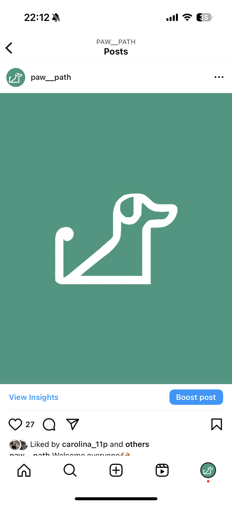
Reel from 19.3.2025, 875 reach and 55 likes:
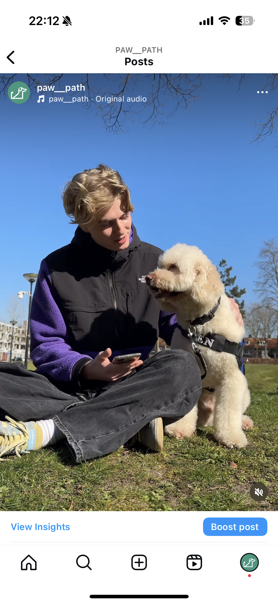
Reel from 20.3.2025, 488 reach and 37 likes:
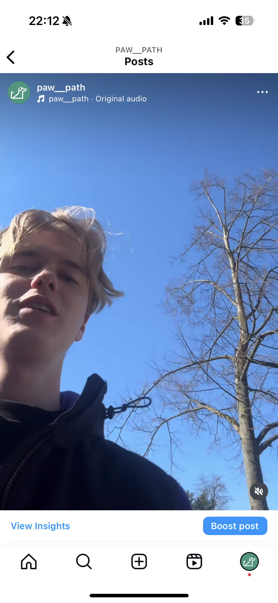
Post from 21.3.2025, 128 reach and 28 likes:
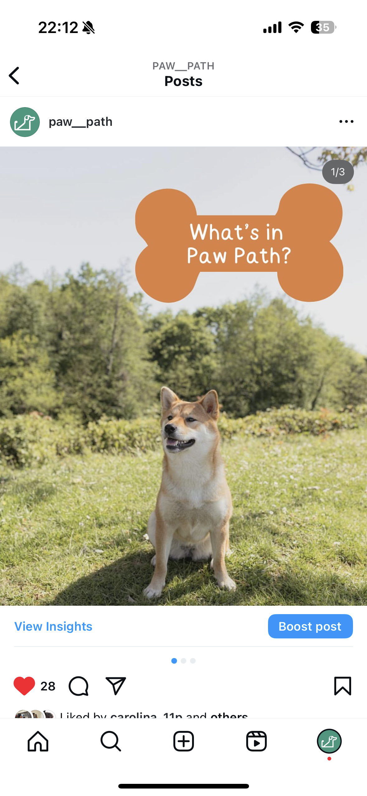
Week: 24.3.2025 – 30.3.2025
In the second week we also posted 2 posts and 2 reels, as we saw that it worked well in the first week. We narrowed it down to one “informational” post and mainly focused on humorous content, because our target audience really likes it, and we wanted to gain more followers and traffic on our account.
Post from 24.3.2025, 148 reach and 14 likes:
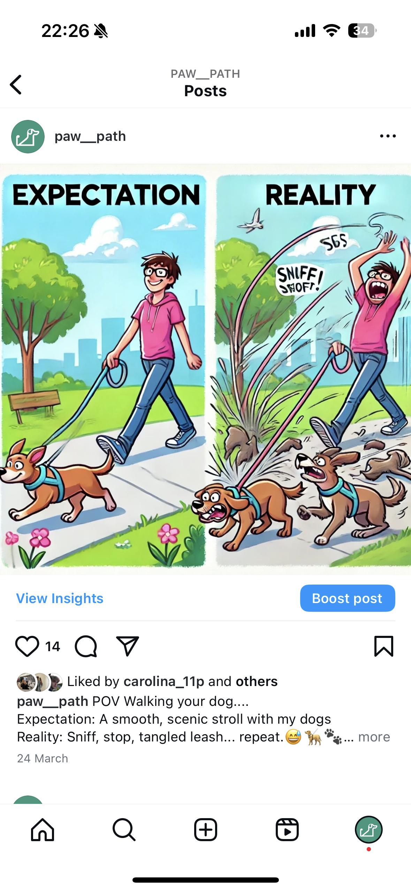
Reel from 25.3.2025, 569 reach, 45 likes and 1 comment:
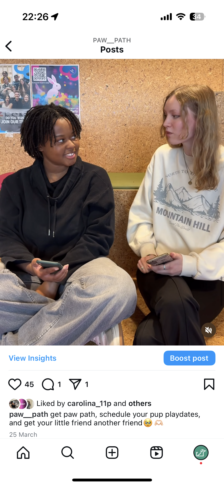
Reel from 27.3.2025, 840 reach, 41 likes and 6 comments:
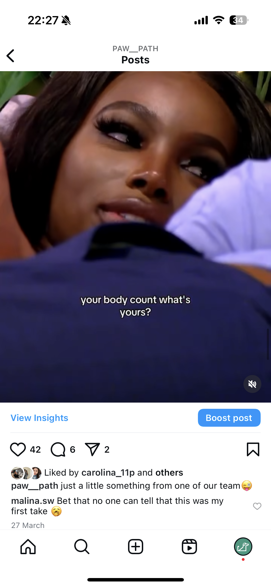
Post from 30.3.2025, 120 reach and 26 likes:
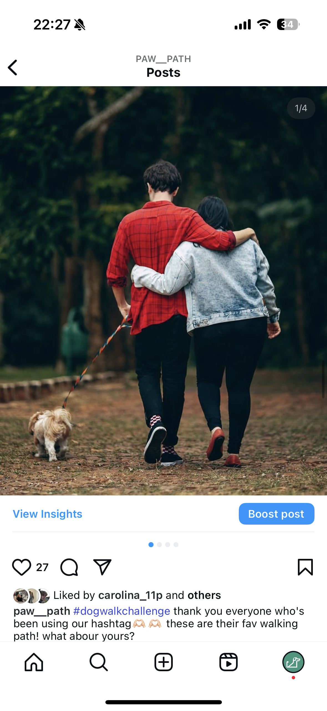
Week: 31.3.2025 – 6.4.2025
In the third week we only posted one post and one reel, due to some sickness related absences. The posts did a little less well than in the previous weeks, probably due to the inconsistency in posting and because no one of our team was in the video which would have led to more interaction from our friends.
Post from 1.4.2025, 72 reach and 10 likes:
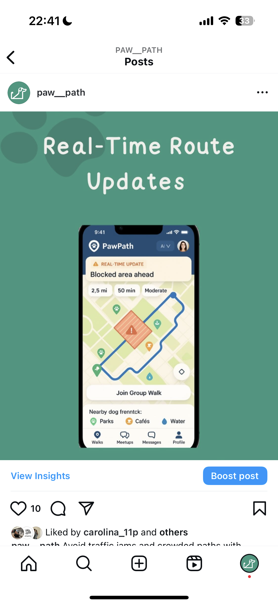
Reel from 1.4.2025, 500 reach and 21 likes:
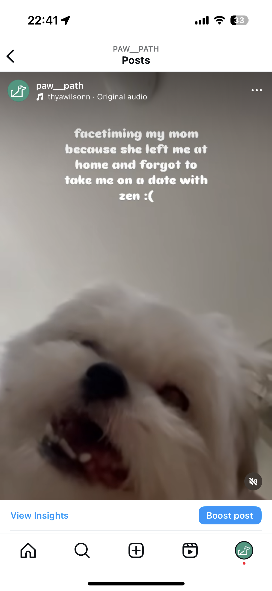
Week: 7.4.2025 – 13.4.2025
In our final week we posted 3 posts and 3 reels, to make up for the lack of content in the third week. The views however stayed relatively low compared to the first two weeks of our campaign. We focused more on dog content and tried to further introduce the values of our brand. Besides our last Reel, none of the content focused on humour, which could be one reason why our posts did not perform too good this week.
Reel from 7.4.2025, 331 reach, 16 likes and one comment:
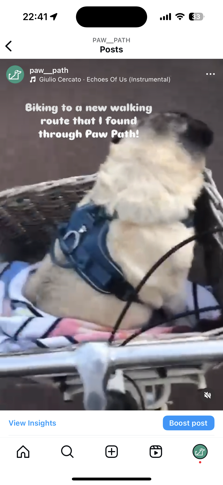
Post from 7.4.2025, 208 reach and 8 likes:
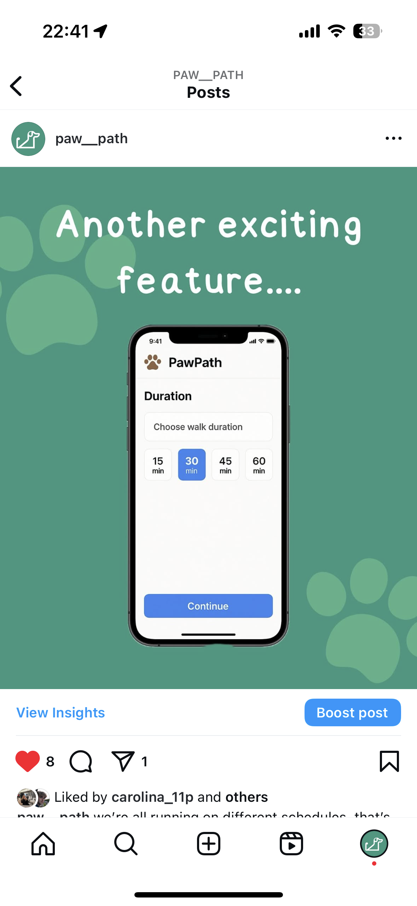
Peel from 8.4.2025, 348 reach, 16 likes and 1 comment:
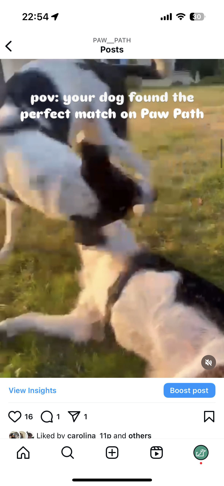
Post from 8.4.2025, 74 reach and 11 likes:
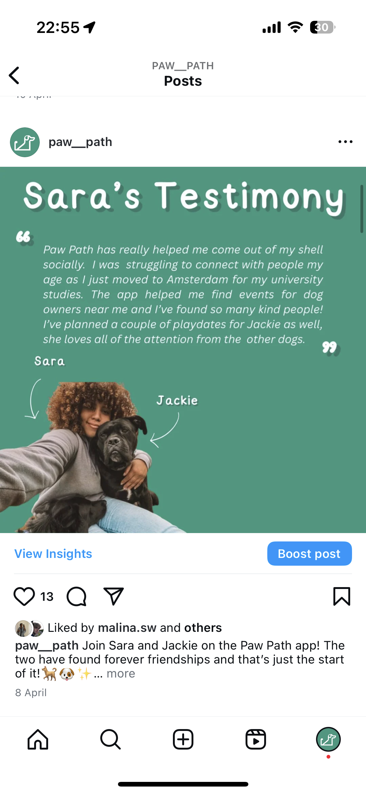
Post from 10.4.2025, 51 reach and 7 likes:
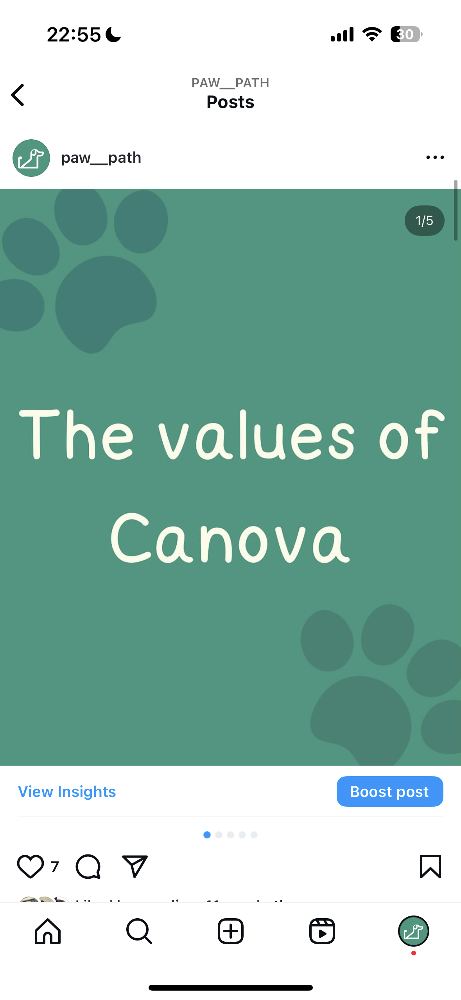
reel from 10.4.2025, 323 reach and 28 likes:
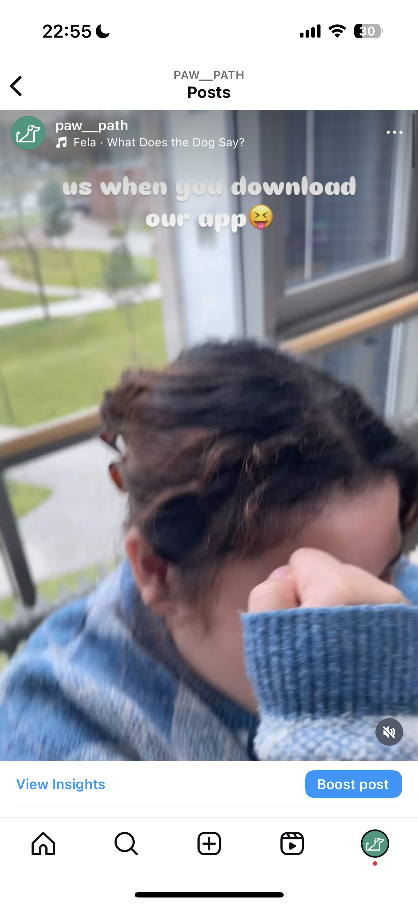
further insights on our Instagram campaign:
Over the course of the whole campaign, we reached 2,511 individual accounts on Instagram. Our average reach per Reel is 534,25 accounts and average reach per post is 125,375. Reels had 62,7% of views, stories 21,0% and posts 16,3%. Reels were also able to create the most interactions. So, Reels spoke the most to our viewers. We defined our target audience as young adults (18–25-year-olds) and the top age group we reached on Instagram were 18–24-year-olds with almost 70%, so our content was able to speak to the desired audience. The two top countries are the Netherlands and Austria and about two thirds of our viewers are female.
Tiktok:
TikTok campaign analysis
https://www.tiktok.com/@pawpath1For our Social Media presence, we decided on posting the same content on TikTok and Instagram. Doing so, we were able to figure out which content works on which platform. The main difference we noticed was that informative content works way better on Instagram than on TikTok, where comedic videos got far more views than informational videos.
Further insights on our TikTok campaign
Since the start of our campaign, we were able to reach 2,728 viewers. Out of these viewers, more than 80% were female. When looking at our reached age groups, more than half of the viewers were in our designated target groups we decided on in the beginning of March. The insights on the locations revealed that almost a third of our viewers are from the Netherlands, followed by “others” and Germany. Others in this scenario means that these viewers are either from a wide range of smaller countries or are unidentifiable by location, highlighting the global reach of the content beyond the top-listed countries. What we also learned during the campaign was that our viewers are mainly active from 7 p.m. to 10 p.m., which also resembled what we were able to find out during the research phase before the actual campaign.
Future planning:
We already dove into this a little bit for the analysis of our Instagram and TikTok account performances. As a summary of this, in the future we hope to utilise hashtags more purposefully in order to drive traffic to our account. For the first few weeks, we neglected to use these completely, which was a mistake. We also hope for more consistency in posting—over the course of the last four weeks, we sometimes uploaded a post two days later than we were supposed to which was quite disruptive to our posting schedule. We want to avoid this by setting deadlines for the content creation in advance to make them ready to post immediately the day of. We also want to have clearer managers of our social media accounts: one person for Instagram, and one person for TikTok. In this way, we continue to ensure that posting is done regularly.
New communication objectives
By May 11th, 2025 we aim to reach:
Instagram: 3,000 total reach from the entire campaign, with each post reaching at least 150 people and each reel reaching at least 600. This will be done with 8 reels (2x per week), 4 posts (1x per week), and 12 stories (3x per week). Justification: in the first month of this campaign, we reached 2,500 people total so we decided to up our goal to 3,000. Our reach per post was 125 and for reels it was 534, and because reels tended to do better at attracting non-followers we felt we could have higher expectations of an improvement rate as compared to posts—especially because we would now plan to post two reels a week.
TikTok: 3,000 total reach from the entire campaign, with each post reaching at least 700 people. Justification: The total reach of the first month of our campaign was 2,728 viewers, and an average of 547 views per TikTok. With our updated content schedule of posting three times a week instead of only twice, we feel that it is achievable to bump up our reach and numbers by 300 in each category.
New affect objectives
By May 11th, 2025 we want our audience to feel:
Loyal to our brand, expressed in the form of feelings of eagerness and amusement. They should anticipate our content schedule and look forward to the next reel/post/story and feel understood by our brand on the level of humor and informational content. Justification: This is an expansion upon the previous objectives, specifically the one we felt was most important for our audience to feel.
New response objectives
Follow, Likes, and Views on Instagram: 250 followers, 800 views (reels) /250 (posts), and 50 likes Justification: we had surpassed our initial goal of 150 followers even before our campaign was through. Boasting 171 followers, and now with a more consistent content schedule and hashtags, we believe it would be completely feasible to build up to 250 followers. We also had average views of 534 for reels and an average reach of 287 for posts. Including both reels and posts, we got 23 likes per upload, and we believe that we can double it.
Follows, Likes, and Views on TikTok: 50 followers, 600 likes, 3,200 views. Justification: for our first month, we only managed to get 8 followers. We had on average of 24 likes per TikTok and 547 views per video. Because of this data, we think that with the updated content schedule of posting thrice a week and more explicit linking of our TT account to our Instagram, we should be able to bump up our number of followers, likes, and views. Then we also learned that we neglected to use hashtags on both our social media accounts, which are proven to increase reach and viewership and that is something we would implement.
Professionalism:
This was the first Reel we uploaded for our marketing campaign, on the 19th of March. The aim of the Reel was to create a good first impression about our company, which worked surprisingly well: This post was viewed over 1.600 times! The reason why we used this as our first post was to appeal to the ’cuteness factor’ of the dog’s presence and bring in an initial audience. The post was uploaded on the 10th of April. By uploading our values, we wanted to raise awareness on what we stand for and show people what we believe in and what´s important to us. The real time route updates post from the first of April was to give followers a first impression of how our actual App could look like. In the post, there can one of our key features be seen, the Real-Time Route Updates. Lastly, one of our more unserious posts, from the 27th of March. The simple idea behind it was to use a current viral social media trend in order to generate a high number of views and many interactions. Considering that this Reel got more than 1.300 views, the concept itself did work well. We chose this idea because Gen Z especially enjoys humorous and scandalous content such as this.
Marketing Redo:
Context of campaign
The main objective for our social media campaign was to promote our product, the Paw Path App. We chose a mixture of informative content about the key features of our application combined with comedic content following current trends on social media. We have put the main focus of our marketing campaign on young dog owners from the ages of 18 to 25, particularly those living in urban areas. During the conversations we had with our target audience we discovered two main issues that we want our users to overcome: Many of the interviewees mentioned struggling with finding new walking routes in the city suitable for their preferences. In addition, another problem was brought to our attention during the interviews: A high percentage of the interviewed dog owners stated that they are struggling with maintaining their social connections with fellow dog lovers.
To extend the impact, we launched an extra 2 weeks of campaign collaboration with a local dog-friendly cafe called the Cafe Paws Tilburg. This partnership was developed in response to our target audience’s insight, whereas dog owners love to discover new routes, they also crave connection. Hence, maintaining a social connection is a struggle if there’s no communal space to connect after walking.
Through this collaboration, not only we introduce the new feature which is discovering dog-friendly cafes but also we provide 10% off at Cafe Paws Tilburg when showing the app. Our content strategy during these two weeks are teasing and introducing the collab, café spotlights and location lists with entertaining Reels that are connected to the campaign in maintaining engagement where PawPath promotes walking, resting, and connecting together.
Objectives:
Reach:
By June 3rd, we aim to reach in Instagram: 300 total reach from the entire campaign, with each post reaching at least 100 people. We will upload 3 reels and 5 posts.
Affect:
By the 3rd of June, 2025 we want our target audience to feel:
- Connected to their community with the help of interactive content that puts them in touch with each other (question stickers, hashtag trends, captions that encourage discussions in comments). With a real life meet up opportunities such as our collaboration with Cafe Paws tilburg where dog lovers can gather and bond
- Joy and eagerness for new content, as a result of feeling entertained by our previous content.
- Understood by our brand because of relevant content in-line with their humour and informational needs. whether it’s helping them find new walking routes or creating opportunities to reconnect with others in the dog-loving community.
Response:
By the 3rd of June, as a response we want engagement, follows and likes, on our social media accounts. For Instagram we aimed for 150 followers. For views per post we wanted 100 with 10-20 likes.
Platforms and Content Strategy:
- Target audience:Gen Z
- Platform: Instagram
The continuation of the campaign led us to focus solely on Instagram as our primary platform, after observing that TikTok engagement did not meet expectations. TikTok has high potential for virality and wide reach,but it lacks the ability to sustain meaningful connections with the audience. In contrast, Instagram allows us to build a more loyal and engaged community, which aligns better with the goals of our extended collaboration campaign (Code3, 2022). Our target audience 18-25 Urban dog owners which is Gen Z has an average attention span of just 8 seconds, they prefer short, visual, and interactive content. To attract Gen Z loyalty, brands must prioritize transparency, creative storytelling, and a clear purpose. By using Instagram's carousel posts, and reels, we designed content that feels personal, fast-paced, and community-driven. Another key content strategy is incorporating dogs more. Pets evoke emotional responses, making contents more shareable and relatable. As a result, it increases audience interaction and brand loyalty. According to (Austin, 2024), pet influencer accounts achieved an average engagement rate of 7.2%, whereas human influencers averaged 2.4%. This suggests that animal content is over three times more effective at capturing likes, comments, and shares.
Campaign timeline:
Content calender
Learning Points
Our instagram account “paw__path” was successful. With an extended 2 weeks of campaign we received 1,312 views with 68.3% viewers from followers and 31.7% from non followers. Sharing 8 contents in the form of Instagram posts, carousel and reels. We learned that reels get more views and interactions by our followers. Reels that performed the best contained a cute dog. While teasing the collaboration post, also performed well on our Instagram page, showing that our audience is eager to learn more about our product through short form content. We defined our target audience as young adults (18–25-year-olds) and the top age group we reached on Instagram were 18–24-year-olds at 62.3%. so our content was able to speak to the desired audience.
Week 1 (May 21-May 27)
We started the extension with a reel mentioning that the paw path is back. Previously, we had a one month campaign and it was successful. We decided to extend a 2 weeks collaboration campaign to attract a new audience. The second post is a teasing post that we are going to reveal something new. Then the second day we reveal the collaboration and a funny meme post to maintain relatability.
24 May 2025
24 May 2025
The reel reached 57 people with 162 views and 8 likes which is way below our objectives of reach per post since we just started posting a few weeks after the previous campaign.
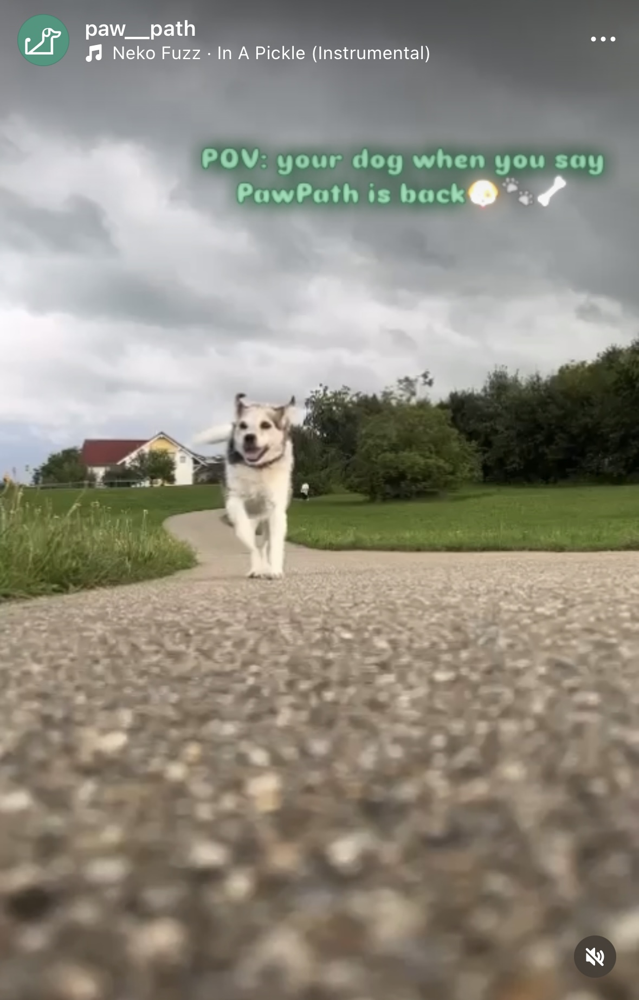
To build up curiosity we decided to do a tease post which resulted in a higher reach to 95 people with 12 likes and 148 views, where we managed to bring spark to the audience after weeks of hiatus.
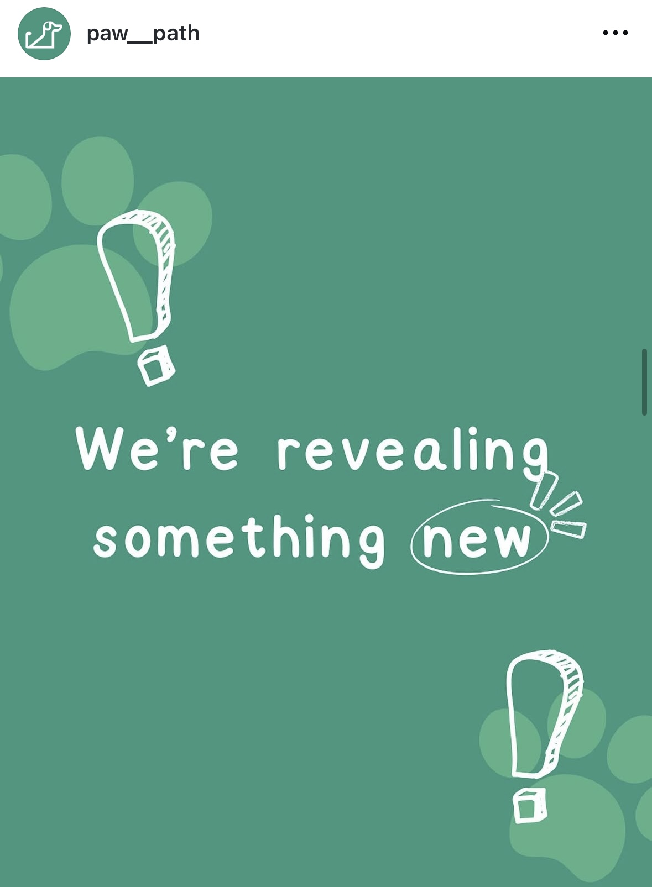
27 May 2025
Finally on the second posting day of the week, we uploaded the revealing post that reached 55 people with 6 likes. We expected more numbers as we updated with something new.
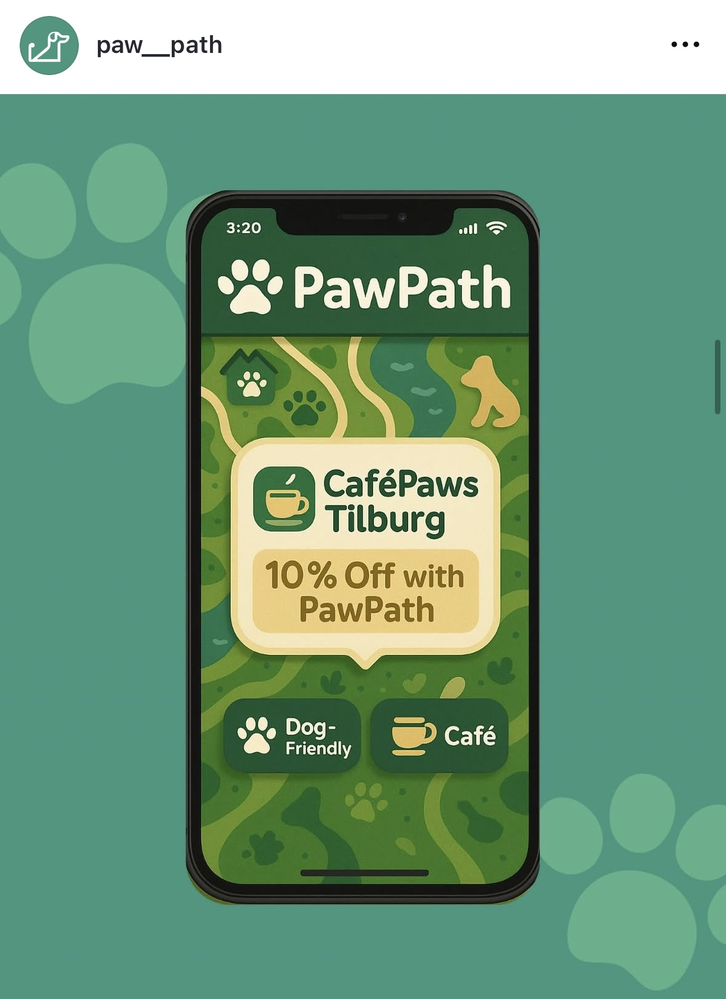
The funny meme post received 9 likes with 65 people reach. It is a bit ironic that this was higher than the reveal, however it got us thinking that maybe revealing a new collab/feature could be in a short form of video content.
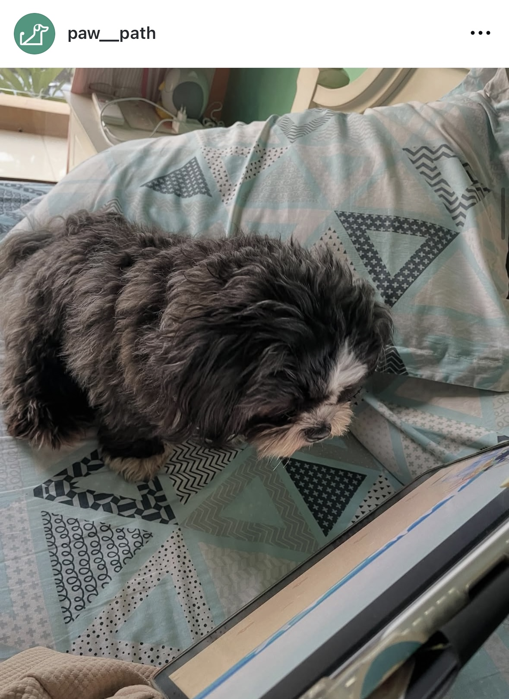
Week 2 (May 28-June 3)
For the second and final week, once again we observed that static posts are not doing well even though we’re revealing a new feature+collab, hence instead of only 1 reel, we do reels twice a week.
30 May 2025
A funny reel of puppy with his puppy eyes waiting for his puppuccino successfully surpassed our objectives with 172 reach and 11 likes. With this approach, Not only we made our audience laugh but also informed them about the collaboration.
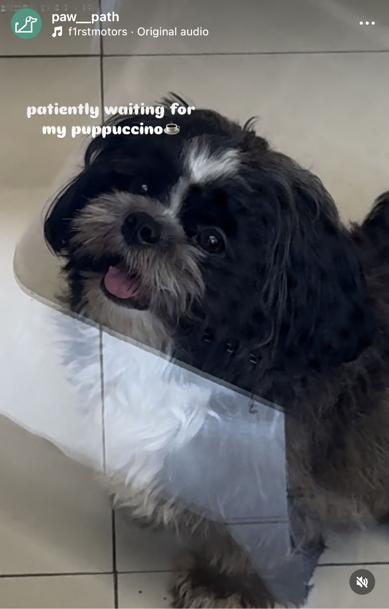
A post of our customer in Cafe Paws Tilburg with her dog while pushing the 10% off voucher has 7 likes 59 reach which decreased a bit significantly from the reel.
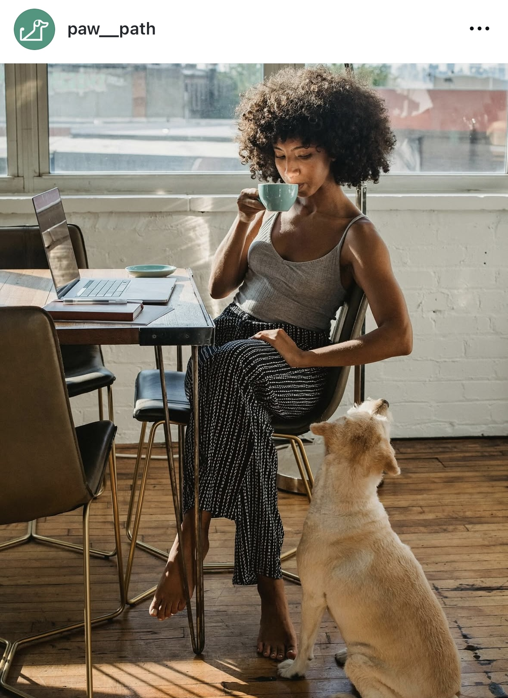
1 June 2025
The reel of a cute dog getting belly rub has the highest engagement with 15 likes and doubled our reach objectives with 216 people reached. Which proves that if a dog is involved in our videos, engagement is way higher.
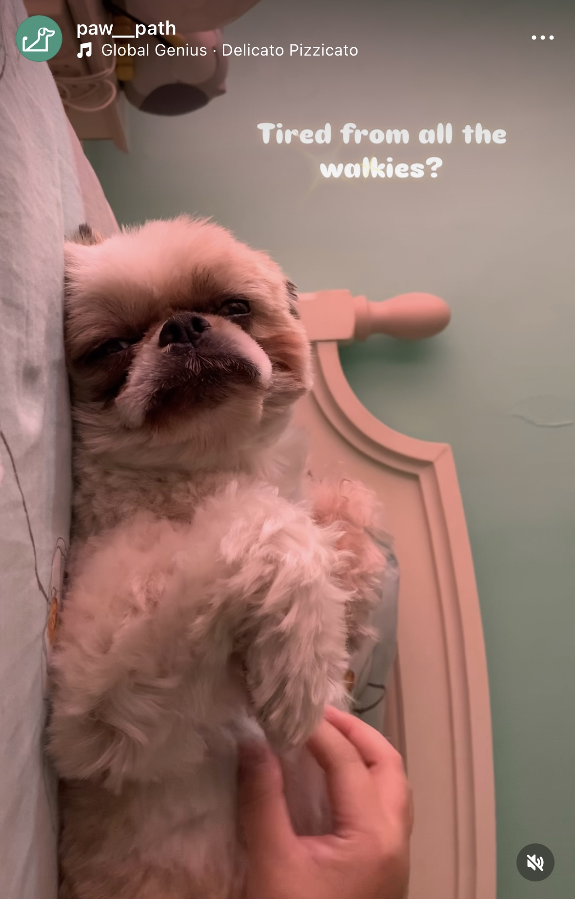
Our last and final post is the list of dog-friendly cafes in Tilburg with a total of 9 likes and 49 reach.
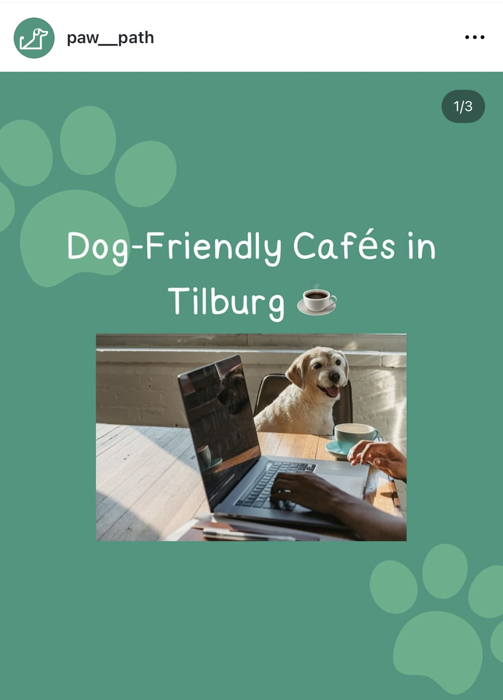
Further Insights on our extended instagram campaign:
Overall this campaign has reached 387 people which is 87 more than our objectives. Reels had 56.3% more views than post with 43.7%, so Reels spoke the most to our viewers. Also reels with dogs with the ’cuteness factor’ of the dog’s presence brings in more audience. Our top audience came from Breda and Tilburg, which is great since our collaboration is with a cafe in tilburg with the top country in the Netherlands at 31.8%.
Future Planning
Over the course of the extended campaign, this is what we learned and what we should implement in the future:
1. Prioritize Reels as the Primary Content Format: Throughout the campaign, Reels consistently outperformed static posts in terms of views and likes especially when the content featured dogs. This aligns with Gen Z's preference for short-form, visual-first content. In the future Reels should become the main format allowing PawPath to stay aligned with user habits while maximizing engagement.
2. Dog-Focused Videos Drive the Highest Engagement: Reels that featured dogs whether they were being pet, running, or playing with friends consistently delivered the highest engagement levels during the campaign. The combination of relatability, emotional appeal, and cuteness engaged deeply with our Gen Z audience. Videos without dogs, even when informative or humorous, has an average of lower reach and interaction. Moving forward, integrating dogs into the majority of our Reels is essential to maintain strong audience interest and create a deeper emotional connection with the brand.
3. Continue Targeting Gen Z Dog Owners in Breda and Tilburg: Our most active and responsive audience segment was 18–24-year-old dog owners located in urban areas like Breda and Tilburg. Future campaigns can strengthen the connection by featuring recognizable locations, and promoting more local partnerships.
New Reach objectives
By June 18th, 2025 we aim to reach:
500 total reach from the campaign, with each post reaching at least 150 people and each reel reaching at least 400. This will be done with 8 reels (2x per week). Justification: reels tend to do better at attracting non-followers. We felt we could have higher expectations of an improvement rate as compared to posts especially because we would now plan to post two reels a week. Each reel should reach at least 150 users. Total campaign reach goal: 450 accounts.
New affect objectives
By June 18th, 2025 we want our audience to feel:
we want our audience to be Loyal to our brand, expressed in the form of feelings of eagerness and amusement. They should anticipate our content schedule and look forward to the next reel/post/story and feel understood by our brand on the level of humor and informational content. Justification: This is an expansion upon the previous objectives, specifically the one we felt was most important for our audience to feel.
New response objectives
By June 18th, 2025 we want to have:
200 followers, 500 views for reels, and 40 likes per reels Justification: we had surpassed our initial goal of 150 followers even before our campaign was through. Boasting 158 followers, we believe it would be completely feasible to build up to 200 followers.
New Campaign Timeline:
New Content Calender
Management:
Lean Canvas original
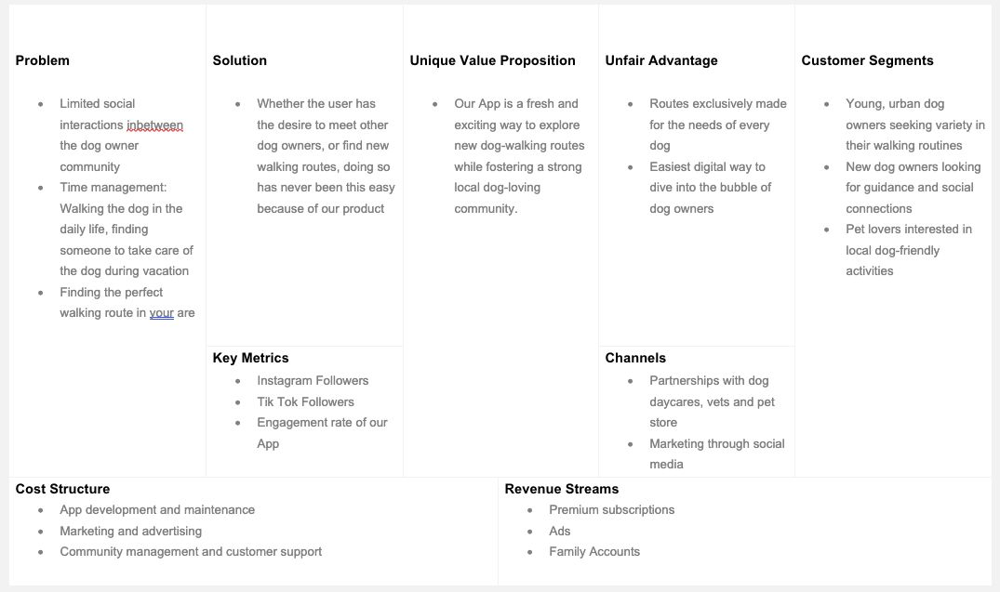
Lean Canvas new
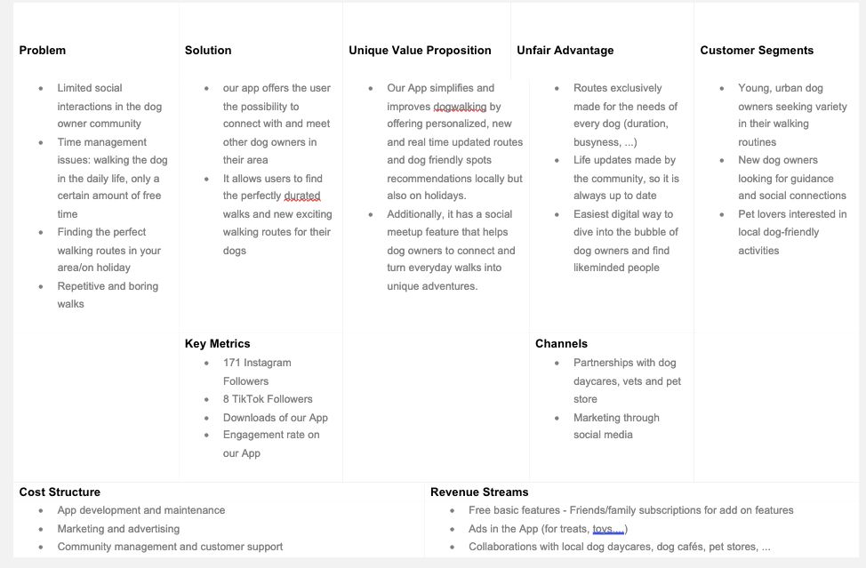
Cost Structure Breakdown
Marketing and Advertising: Costs associated with running social media campaigns, creating content (Reels, posts, carousel), and any paid promotions.
- Fixed Costs:
1. Content Creation (e.g., hiring a freelance videographer/designer for the campaign): €500
2. Social Media Management Tools (monthly subscription): €50
- Variable Costs:
1. Paid Social Media Ads (per campaign, e.g., Instagram promotion): €200
2. Total Estimated Marketing & Advertising Cost (for a short campaign): €750
App Development and Maintenance: Ongoing costs for developing new features (e.g., "adjusting duration" ), technical support, bug fixes, server hosting, and general maintenance of the Paw Path App.
- Fixed Costs:
1. Server Hosting (monthly): €75
2. App Store Developer Fees (pmonthly): €8.33 (€100/year)
- Variable Costs:
1. Freelance Developer Support: €250 (5 hours x €50/hour)
2. Total Estimated App Development & Maintenance Cost (monthly): €333.33
Community Management and Customer Support
- Fixed Costs:
Community Management Software: €25/Month
- Variable Costs:
1. Dedicated Community Manager Part-time for 10 hours/week at (€15/hour): €600/Month
2. Total Estimated Community Management & Support Cost: €625/Month
Cost Per Unit
Total Estimated Monthly Fixed Cost: €658.33
Total Estimated Monthly Variable Cost: €1,050
Since we are not selling a physical product, per unit would refer to active user. After the launch of the campaign we are expecting 300 active users.
So the estimated cost per active user for the Paw Path App:
€658.33+€1,050/300= €5.69
Validation of Assumptions
We decided to focus our website on offering services for discovering new dog walking routes that meet the niche needs of a pet owner. On top of that, we made it a community-centric app to put people in touch with each other. The reason for this is because our problem interviews led us the following four insights of our target audience: first, dog owners find walking the same routes repetitive and are very much open to exploring new pasts, though they lack the resources to find them. This directly relates to their second one, which is that dog owners feel limited in their route choices. For urban livers, the primary reason for this was that their city was too sizable and they often found themselves overwhelmed with trying to find new options and weren’t quite sure where to begin the search. This was especially the case with students or young adults who have a job, because it was already sometimes difficult for them to squeeze in walks for their pets, much less be adventurous about it. Third, we found that dog owners value social connections but often struggle to maintain them past the point of saying hello to other dog walkers they run into on their walks. However, one of their biggest wishes is to build deeper and more repetitive relationships. In our solution interview, our interviewees appreciated the features that they suggest routes based on mood and preferences. This especially in relation to being able to see the business and duration of trails, and having chat and event planning functions.
In our solution interviews, we inquired whether people would be willing to pay for the app, however we learned that most people would not buy the app for an initial price. However, they were open to getting add-on features within the app (such as unlocking extra stats or kilometer tracking features). Then, they would be willing to consider a family or friend subscription to the app in order to split the costs and have people who they know on the app as well. This is why the final version of the lean canvas we have the description of free basic features and the initial download. However, we’ve also listed add-ons.
A moment that we pivoted was when we decided to focus specifically on urban livers. Initially, we had wanted to focus on small-town people as well, but our problem interviews revealed that they’re already quite familiar wih the routes, mostly because they grew up there or have already done the limited amount of exploration that is possible. This is why we then refocused onto a ‘travel mode’ feature, as a result of them sharing that they often struggle finding routes to take their dog while on holiday in an unfamiliar town.
Citation:
Austin, S. (2024, May 12). The Rise of the Animal Influencers: How Pets Are Taking Over Social Media - Marketing Scoop. Marketing Scoop. https://www.marketingscoop.com/marketing/the-rise-of-the-animal-influencers-how-pets-are-taking-over-social-media.com
TikTok vs. Instagram: Which Is Better for Your Brand? (2022, September 8). Code3. https://code3.com/resources/tiktok-vs-instagram-which-is-better-for-your-brand/
Appendix:
Problem and Solution InterviewsWebsite Testing Report